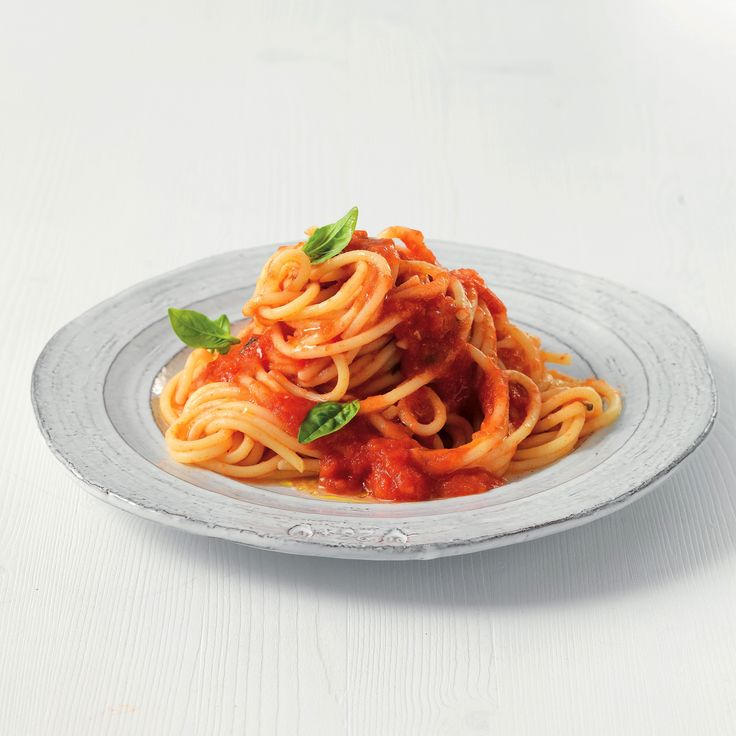

Recipe Information
| Information | Details |
|---|---|
| Preparation Time | 30 minutes |
| Cooking Time | 30 to 40 minutes |
| Total Time | 60 to 70 minutes |
| Servings | 4-6 people |
Description
This classic spaghetti recipe is a family favorite. Made with a rich tomato sauce and perfectly cooked pasta, it's a dish that everyone will love.
Ingredients
-
Noodles/Pasta
- 1kg or (2lbs) spaghetti pasta
-
Meat and Protein
- 500g or 1lb ground beef or ground pork
- 6 to 10 red hotdogs or beef franks, sliced diagonally
- Optional: 6 oz minced luncheon meat or liver spread
-
Sauce
- 1kg or 35oz Filipino-style sweet spaghetti sauce
- 1/2 to 1 cup of banana ketchup
- 2tbsp tomato paste
- 1/2 to 1 cup of sugar
- 1 cup beef or chicken stock or water with beef/pork bouillon cubes
-
Aromatics/Seasonings
- 1 medium onion (chopped or diced)
- 4 to 5 cloves garlic (minced)
- 2tbsp cooking or olive oil
- Fish sauce (patis) or soy sauce (to taste)
- Salt and ground black pepper
- Optional: Sugar (to adjust sweetness)
- 1/4 cup of evaporated milk or condensed milk
-
Garnish
- Grated cheese (cheddar or parmesan)
- Mint
Steps in Cooking Spaghetti
- Bring water to a boil in a large pot. Add the spaghetti noodles and cook according to the package instructions. Drain and set aside.
- Heat the cooking oil in a large pan over medium heat. Sauté the garlic and onion until fragrant and softened.
- Add the ground beef or pork. Cook until browned and fully cooked.
- Add the sliced hotdogs and optional luncheon meat. Stir and cook for a few minutes.
- Add the tomato paste and stir until it is well combined with the meat.
- Pour in the Filipino-style sweet spaghetti sauce, banana ketchup, and beef or chicken stock. Mix well.
- Season with fish sauce or soy sauce, salt, and ground black pepper. Add sugar if you want the sauce sweeter.
- Lower the heat and let the sauce simmer for about 15 to 20 minutes, stirring occasionally. Add evaporated milk or condensed milk if desired.
- Place the cooked spaghetti noodles on a serving plate. Pour the sauce over the noodles.
- Top with grated cheese and serve while warm. Enjoy your Filipino-style spaghetti!
Share your ideas
We'd love to hear about your favorite ways to customize this recipe! Share your tips and variations in the comments below.